Рух
Керуйте хрестовиною. Знищіть усі двадцять танків, перш ніж вони розіб’ють щит штабу.
TANK ’84
Польовий гід ангару — правила, танки та бонуси.
TANK ’84 — оригінальна альбомна аркада для iPhone та iPad. Ви керуєте танком, тримаєте ангар і бережете щит штабу внизу поля.
Вісімдесят чотири етапи. По двадцять ворогів на кожному. До чотирьох машин одночасно на полі (шість у режимі на двох).
Етапи 1–3 — безкоштовно. Unlock Full Game (разова покупка) відкриває всі 84 етапи та випадкові карти. Режими лишаються вільними — без реклами, без «енергії».
Керуйте хрестовиною. Знищіть усі двадцять танків, перш ніж вони розіб’ють щит штабу.
Червона кнопка стріляє. Тримайте лінію і бережіть ангар.
База внизу поля. Якщо її знесуть — вихід закінчено.
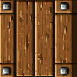
Ламається від будь-якого пострілу. М’яке укриття для вас — і для них.
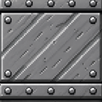
Потребує ЗІРКИ — бронебійні снаряди пробивають.
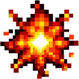
Спочатку знімає весло (якщо ви у воді), потім зірки, потім життя.
Бонуси падають із мерехтливих носіїв — появи 3, 6, 10, 14 і 17. Підбір на землі пульсує, щоб його було видно.
Зустрічні кулі гасять одна одну в повітрі. Використовуйте це в дуелі.
Пауза — будь-коли. Після «ЕТАП ПРОЙДЕНО» кнопка ДАЛІ зберігає рахунок, життя й зірки.
1 гравець — один пульт. 2 гравці — два телефони в кімнаті (Nearby) або Game Center: по одному танку на пристрій.
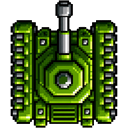
Зелена броня. Хрестовина — рух, червона кнопка — вогонь. Тримайте ангар і щит штабу.
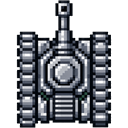
Повільна базова загроза. Легко читається, але небезпечна в зграї.
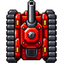
Малий і швидкий. Важко спіймати — не дайте обійти базу.
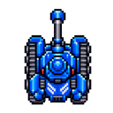
Середня швидкість, стріляє часто. Поважайте темп вогню.
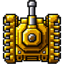
Важкий корпус. Чотири влучання, перш ніж зійде з поля.
Десять секунд сталевих нервів — влучання вас не беруть.
Заморожує всіх ворогів на полі на десять секунд.
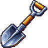
Відновлює дерево навколо штабу.
Одна: бронебійність. Дві: подвійний залп. Три: додаткове життя.
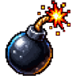
Очищає всіх ворогів, що зараз на екрані.
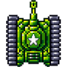
Додаткове життя. Беріть, коли в ангарі гаряче.
Їзда водою дванадцять секунд. Влучання обриває відлік; якщо ви ще в каналі — можна доповзти до берега. Аура тримається до суходолу.
Це не ремейк чужої касети. Карти, графіка й правила створені для цієї гри. Назва — уклін: жар аркади 1984-го і натяк на справжню машину з Харкова.
Захищайте базу.